저번포스팅에 이어
이번에는 엄마님과 함께한 레스토랑투워 대방출^^;;;
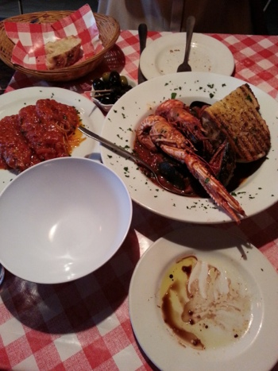
Trattoria DA ALDO
어쩐지 사람들에게 알려야 한다는 사명감이 드는 이탈리안
이날 빵은 조금 탔다 ㅡㅡ;;
하지만 여전히 맛있게 먹었음
점원들 완전 불친절해도 자꾸가게되는 신기한곳^^;;;
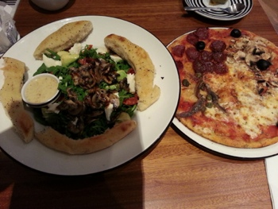
브릭레인 근처 Pizza Express
가면 주로 시키는 Four Seasons
샐러드도 맘에들었는데 이름 기억안난다;;;
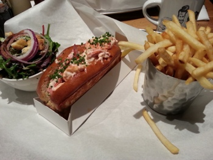
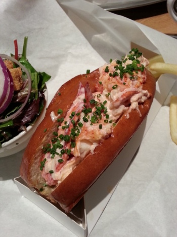
Burger and Lobster
우히히 여기도 사명감이 마구 샘솟는곳
엄마님도 매우 좋아하셨음 ㅎㅎㅎ
점심시간대 피해서 오후3-4시 사이 방문하면
그럭저럭 많이 안기다리고(......;;) 들어갈수있습니다^^;;;
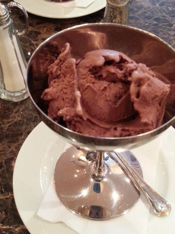
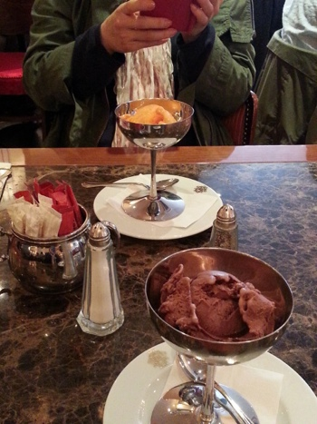
최근 완전홀릭중인
caffe concerto 아이스크림
망고/수박 아이스크림 너무좋아 +_+
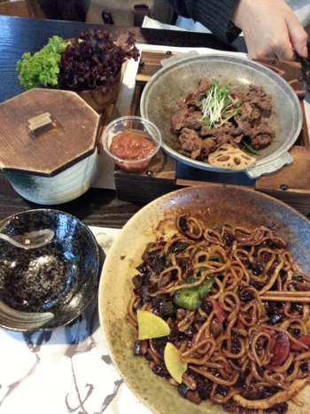
홀본 김치레스토랑
여긴 음식보다는 가게내부 보여드리고 싶어서 ㅎㅎㅎ
한국서 먹었는데 맛없어서 망한(.....;;) 자장면 여기서 먹었당
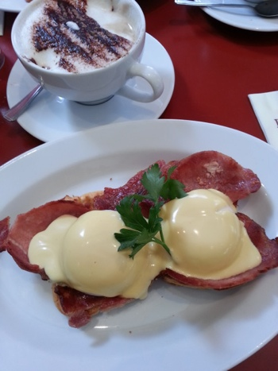
........포인트카드 같은거 있었음 벌써 할인 여러번 받았을거 같은
엄청 자주가는 Patisserie Valerie
Eggs Benedict & Cappuccino
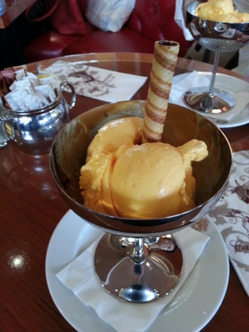
caffe concerto 한번 더 갔당
망고아이스크림 XD
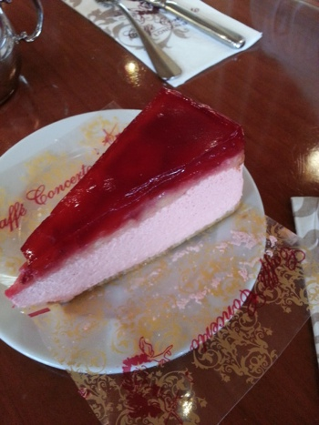
케키도 하나 주문
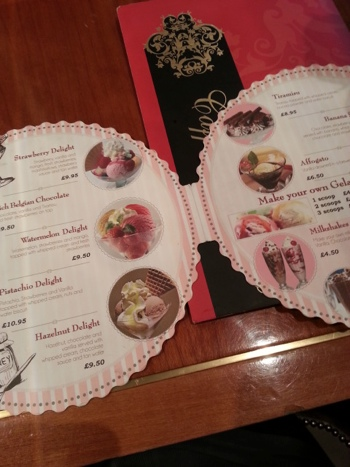
여름가기전에 저 밥한끼 사이즈의 아이스크림선데
꼭 먹을테야 ㅜㅂㅜ
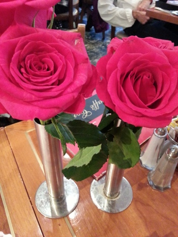
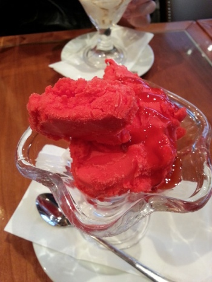
이건 다른날 가서 주문한 소르베 - 수박
이것도 맛나 ㅜㅜ 흑흑
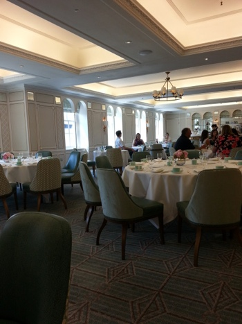
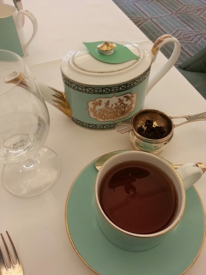
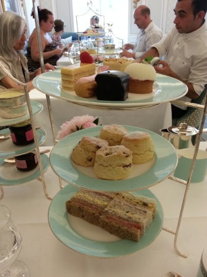
Fortnum & Mason
애프터눈티셋
암생각없이 방문했는데 세상에 당일 예약이 풀로 다 차있어서 ㅡㅡ;;
한주 미뤄 토욜일날 댕겨왔다
스콘과 크림은 여전히 맛났음 ㅜㅜ
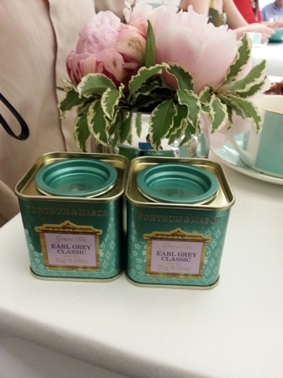
다먹은후에 선물로 주는 미니 earl grey 캔
귀엽당 :)
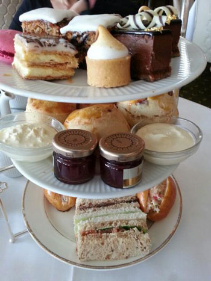
이건 물괴기 언니랑 5월에 갔던 해롯
여기도 괜찮았음
내부가 엄청 넓고 밝아서 맘에들어+_+
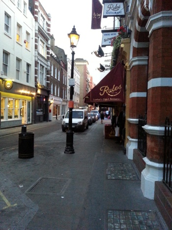
한국 가시기 바로전날 다녀온 the rules 레스토랑
김여사님 가이드북에서 '영국에서 가장오래된 레스토랑'
이 문구에 꽂히셨음
여기도 예약안했음 큰일날뻔 ㅡㅡ;;;;
1798년에 오픈했응께 200년이 넘었네;; 워우;;;
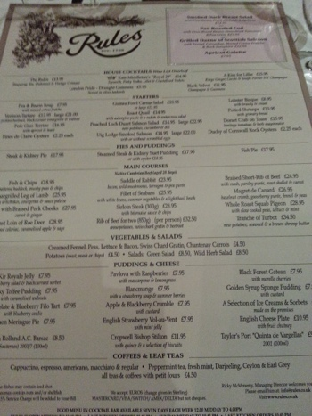
토끼 / 비둘기 / 사슴고기 등 흔치않은 메뉴가 많이 보였당
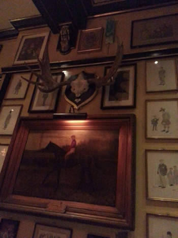
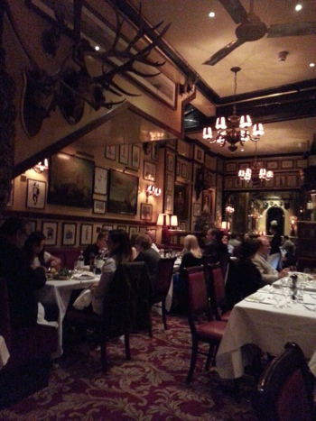
가게내부 맘에들오
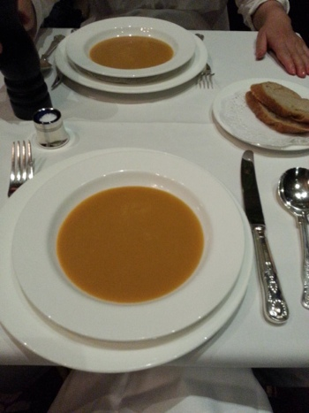
Lobster Bisque
with brandy & cream
작은 냄비째 들고와 서빙하는게 잼났다
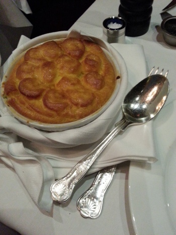
Fish Pie
난 맘에들었는데 엄마님은 좀 짜다고 그러심^^;;
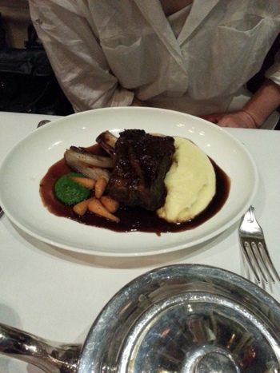
Braised Short Rib of Beef
with mash, parsley puree, roast shallot & carrot
요게 진짜 맛났음 +_+
괴기가 완전연하고부드러워 ㅜㅜ
엄마님은 parsley puree를 매우 맘에들어하심 :)
tea는 페퍼민트 주문했는데
페퍼민트 티의 대마왕님이 납셨다 ㅜㅜ
이제껏 마셔본것중 젤 맘에들었어요
근데 주전나 너무뜨거워 ;ㅂ;
서빙할때 뜨거우니 조심하라고 하긴했는데
그래도 지나치게 뜨겁당;;;
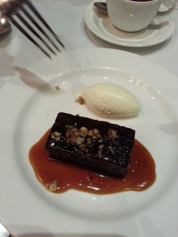
디저트로는
Sticky Toffee Puddingwith caramelised walnuts
요건 내가 좋아하는 메뉴 ㅎㅎㅎ
엄마님도 맘에들어하셔서 기뻤다능 희희
http://www.rules.co.uk
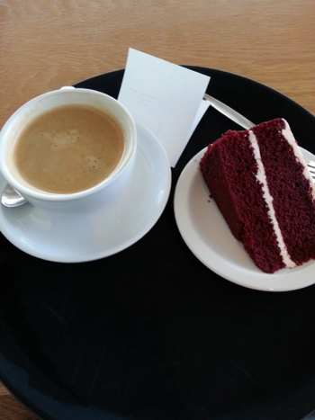
공항서 엄마 배웅하구 카페네로서 커피랑 케이크
한달넘게 같이 수다떨고 돌아댕기다가
갑자기 조용해진 방에 들어오니 한동안 쓸쓸하더구먼요 헝헝;ㅂ;
매일 맛난밥먹구 해서 지금 아쥬 얼굴이 빤딱빤딱합니다 ㅎㅎㅎ